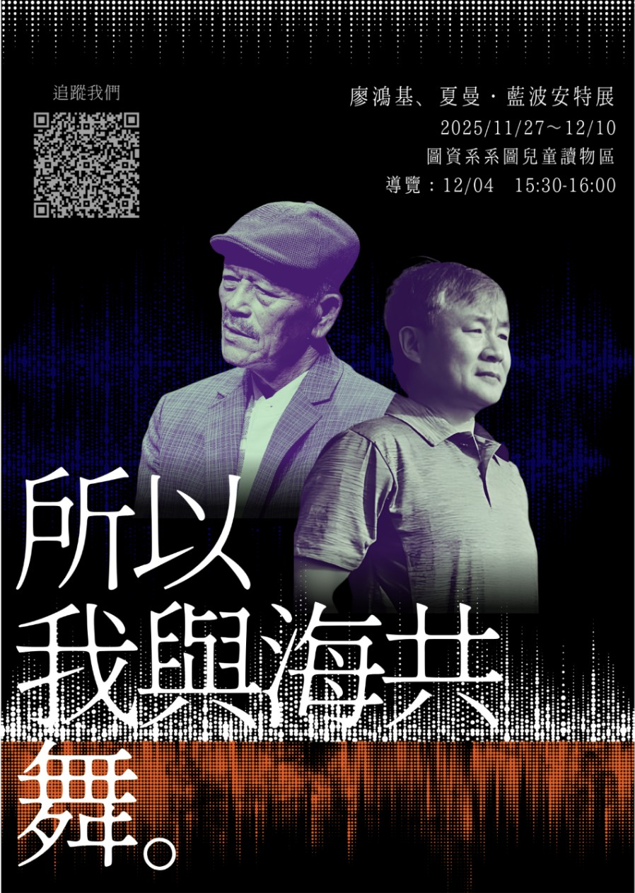

數位典藏／Metadata
黃永相數位紀念館
以臺灣獨立樂團與音樂祭為主題， 將音樂資訊整理成具有情境感與互動性的數位內容。

01／專案介紹
介紹臺灣獨立樂團、音樂祭與相關人物， 讓使用者透過數位內容認識臺灣獨立音樂文化。
02／製作過程
整理網站資訊架構、內容分類與互動方式， 並思考使用者進入網站後的瀏覽順序。
03／成果
完成數位圖書館企劃，將資訊組織、主題內容與互動設計結合。
進入數位紀念館 ↗ ← 上一件：誰是音樂祭 NPC數位典藏／Metadata
以臺灣獨立樂團與音樂祭為主題， 將音樂資訊整理成具有情境感與互動性的數位內容。

介紹臺灣獨立樂團、音樂祭與相關人物， 讓使用者透過數位內容認識臺灣獨立音樂文化。
整理網站資訊架構、內容分類與互動方式， 並思考使用者進入網站後的瀏覽順序。
完成數位圖書館企劃，將資訊組織、主題內容與互動設計結合。
進入數位紀念館 ↗ ← 上一件：誰是音樂祭 NPC